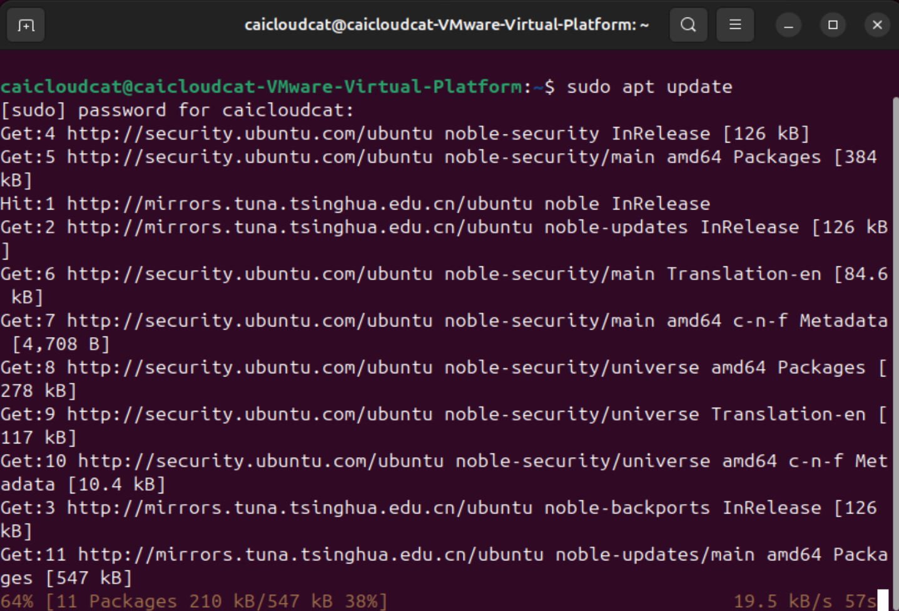
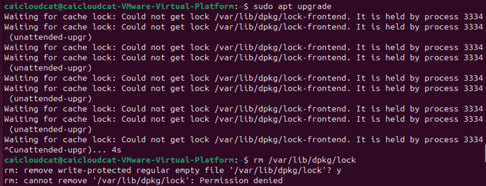
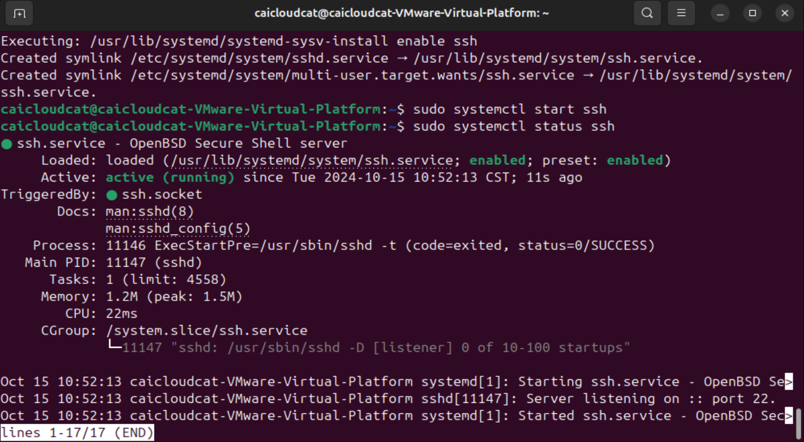
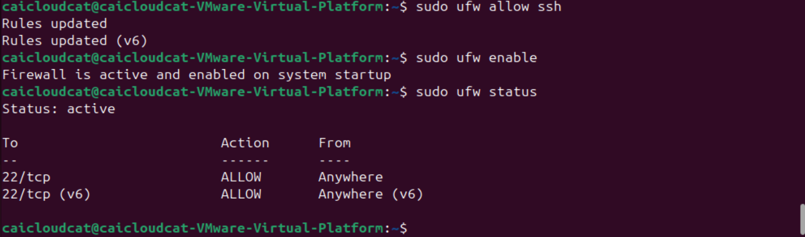
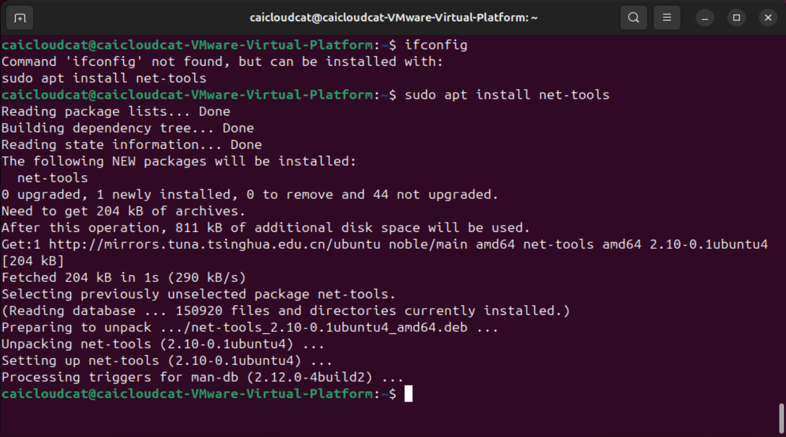
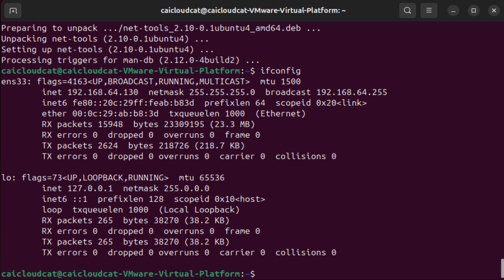
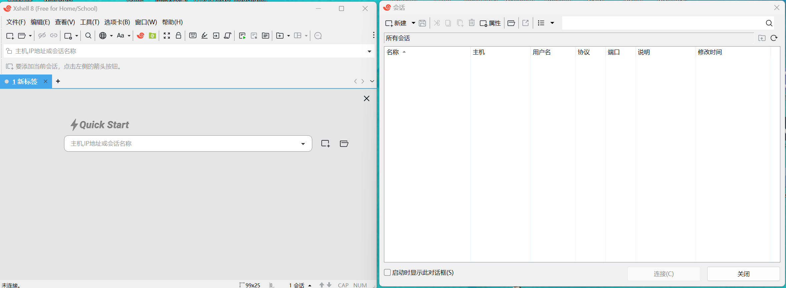
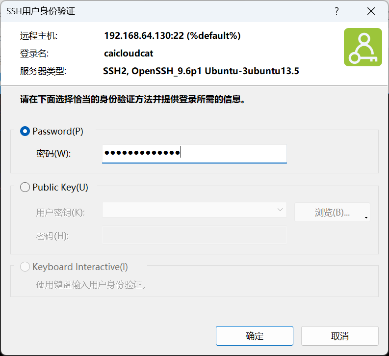

专题03-Ubuntu软件安装和远程连接¶
Ubuntu软件安装以及相关的远程连接介绍。
1 引言¶
本专题主要介绍在Linux中如何安装软件，以及如何远程连接到Linux系统。
2 Linux安装软件的几种模式¶
2.1 源码安装¶
- 优点：开源，可以二次开发；编译安装，与系统适配性高，更加稳定；卸载方便。
- 缺点：安装步骤多，容易出错；编译时间长；报错时新手难以解决。
- 步骤：
- (1) 准备源码包，通常是以.tar.gz等格式存在。
- (2) 安装编译过程中需要的依赖环境。
- (3) 编译安装，包括解压源码包、配置安装路径、编译安装等步骤。
- (4) 设置权限和系统管理配置，如做软连接、设置系统控制等。
2.2 使用包管理器在线安装¶
使用包管理器如 apt-get、yum、dnf等来从**软件仓库**中直接安装软件。这是大多数用户最常用的方法，因为它简单方便，而且可以自动处理依赖关系。
- Debian/Ubuntu 使用 ==apt (Advanced Package Tool)==：
更新软件包列表：sudo apt update
安装软件包：sudo apt install [package_name]
删除软件包：sudo apt remove [package_name]
在Ubuntu系统中，使用管理员权限通常涉及到使用sudo命令。这是因为Ubuntu默认情况下不直接允许root用户（Linux系统的超级用户）登录，而是通过sudo命令来执行需要管理员权限的任务。
- Fedora/CentOS/RHEL 使用 dnf 或 yum 命令：
更新软件包列表：sudo dnf check-update 或者 sudo yum install package_name
安装软件包：sudo dnf install [package_name]
删除软件包：sudo dnf remove [package_name]
- Arch Linux 及其衍生版使用 pacman：
同步数据库并更新系统：sudo pacman -Syu
安装软件包：sudo pacman -S [package_name]
删除软件包：sudo pacman -R [package_name]
2.3 使用软件中心¶
许多Linux发行版提供了**图形界面的软件中心**，如Ubuntu的“Ubuntu Software”。
2.4 使用Snap或Flatpak¶
Snap和Flatpak是两种流行的**跨平台**包管理系统。
sudo snap install package_name
或者
sudo flatpak install flathub com.package_name
3 远程连接¶
3.1 Linux远程连接模式¶
==1、SSH==
SSH（Secure Shell）：SSH是一种网络协议，用于在不安全的网络中安全地操作远程计算机。它是Linux系统中最常用的远程登录协议，几乎所有的Linux发行版都默认安装了SSH客户端和服务器。SSH模式使用的最多。
2、Telnet
Telnet：Telnet是一种早期的远程登录协议，但由于它传输的数据未加密，因此存在安全风险。在现代系统中，Telnet已经被SSH所取代。
3、VNC
VNC（Virtual Network Computing）：VNC允许你通过图形界面远程控制另一台计算机。它主要用于需要远程桌面访问的场景。
4、RDP
RDP（Remote Desktop Protocol）：虽然RDP主要是Windows系统使用的远程桌面协议，但也有一些Linux系统支持RDP，可以通过它来进行远程桌面连接。
3.2 Linux使用SSH创建远程连接¶
要远程访问一台Linux机器，通常会使用SSH（Secure Shell）协议。以下是基本步骤：
1、确保目标远程服务器上已经安装并启用了SSH服务
参考视频：https://www.bilibili.com/video/BV1rz4y1R7DA/?spm_id_from=333.337.search-card.all.click&vd_source=1be27cbe131b9c3024ff27667bbda481
在大多数Linux发行版中，可以通过包管理器安装 OpenSSH 服务器。
Debian/Ubuntu：
sudo apt update：更新软件包列表，检查可用的软件包更新。apt update 命令只会获得系统上所有包的最新信息，并不会下载或者安装任何一个包。
sudo apt upgrade：安装可用的软件包更新，这个步骤第一次执行时需要的时间比较长。apt upgrade 命令来把这些包下载和升级到最新版本。
第一次执行上述两个命令需要较长的下载和更新时间。
sudo apt install openssh-server：安装openssh-server
中间需要确认的时候选择 y，安装完成
sudo apt update：

sudo apt upgrade：

遇到的下载问题：
在Ubuntu中，执行apt install后，出现以下类似问题：
Waiting for cache lock: Could not get lock /var/lib/dpkg/lock-frontend. It is held by process 3334 (unattended-upgr)
看着描述就是有3334的进程进行占用了source文件。
解决方法：
删除锁定的文件rm /var/lib/dpkg/lock
实在没办法解除，直接进行个干掉进程kill -9 3334
注意：这里的3334是占用文件的进程号

3.3 让服务器上的 ssh service 运行起来¶
依次输入三行命令
sudo systemctl enable ssh 让SSH服务在系统启动时自动启动，这样以后就不用每次手工启动了
sudo systemctl start ssh 启用 Linux 系统中的SSH服务
sudo systemctl status ssh 验证SSH服务是否正在运行
Systemctl (system control) 简介
Systemctl是一个systemd工具，主要负责控制systemd系统和服务管理器。
Systemd是一个系统管理守护进程、工具和库的集合，用于取代System V初始进程。 Systemd的功能是用于集中管理和配置类UNIX系统。
在Linux生态系统中， Systemd被部署到了大多数的标准Linux发行版中，只有为数不多的几 个发行版尚未部署。 Systemd通常是所有其它守护进程的父进程，但并非总是如此。
Systemctl的参数可以参考：https://www.sysgeek.cn/systemctl-command/

注意：显示ssh状态后，如果无法继续输入shell命令，可以按q键退出查看状态。
3.4 配置服务器的防火墙¶
配置服务器的防火墙，允许22号端口通过，依次输入三行命令
说明：ufw 是指 ubuntu firewall，即Ubuntu自带的防火墙。因为我们现在是在配置服务器，必须确保网络安全，所以要启动网络防火墙。

备注： ssh的默认端口号是22，所以从防火墙状态可以看出，ssh协议被允许通过22号端口和外部建立TCP连接。
另外，如果有规则以前已经加入防火墙了，在执行sudo ufw allow ssh这条命令时，系统提示会这条规则已经存在了
3.5 检查你的电脑的IP地址¶
检查你的电脑的IP地址，然后就可以从其他机器远程登录，输入命令
ifconfig：configure a network interface，配置网络信息
在输入这个命令的时候，如果提示没有这个命令可以安装命令包，输入

安装完命令包后，输入ifconfig就可以查看网络配置了。如果直接ifconfig可以执行，就不用重新安装命令包了。

从这一段信息可以看出，我的Ubuntu的ip是 192.168.64.130。注意：你的虚拟服务器的ip地址可能不一样！
在网络配置中，
inet192.168.64.130netmask255.255.255.0broadcast192.168.64.255 这几个概念分别代表了：
- inet (Internet Protocol Address):
这是分配给网络接口的IP地址。在这个例子中，
inet 192.168.64.130表示该网络接口的IP地址是192.168.64.130。netmask (Network Mask):
网络掩码用于区分IP地址中的网络部分和主机部分。在这个例子中，
netmask 255.255.255.0表示网络部分是前24位（即前三个点分十进制数），主机部分是最后8位。这意味着该网络的子网掩码是255.255.255.0，它定义了网络的范围。broadcast (Broadcast Address):
- 广播地址是用于发送数据包给网络中所有设备的特定地址。在这个例子中，
broadcast 192.168.64.255表示该网络的广播地址是192.168.64.255。任何发送到这个地址的数据包都会被该网络中的所有设备接收。这些概念共同定义了一个子网：
- 网络地址：通过将IP地址与网络掩码进行逻辑与操作（AND）得到。在这个例子中，网络地址是192.168.64.0（通过192.168.64.130 AND 255.255.255.0计算得到）。
- 子网范围：由网络地址和广播地址定义。在这个例子中，子网的范围是从192.168.64.1到192.168.64.254（不包括广播地址，因为广播地址用于广播消息，不分配给单个设备）。
- 可用的IP地址：在子网范围内，除去网络地址和广播地址后，剩下的IP地址可以分配给网络中的设备。在这个例子中，可用的IP地址范围是从192.168.64.1到192.168.64.254。
- 子网掩码的作用：它不仅定义了网络的大小，还帮助路由器决定如何处理数据包。如果数据包的目的地在子网内，它会被直接发送到局域网；如果不在，数据包会被发送到默认网关，由网关决定下一步的路由。
Made By Kimi.ai
3.6 在客户端使用SSH工具连接Ubuntu服务器¶
从我的主系统 windows11中，使用SSH工具连接Ubuntu服务器，这里先下载SSH的客户端软件XShell。下载地址：
https://www.xshell.com/zh/free-for-home-school/
安装完成后，打开XShell

使用方式：
以 ssh username@ip地址 的格式输入，进行远程访问服务器，我使用的便是 ssh caicloudcat@192.168.64.130
注意：如果你使用XShell的Quick Start窗口，默认使用ssh协议，所以输入的是 caicloudcat@192.168.64.130

提示接受密钥，并输入密码，密码正确后，成功登录。



这样就可以进行远程控制，例如输入ls命令